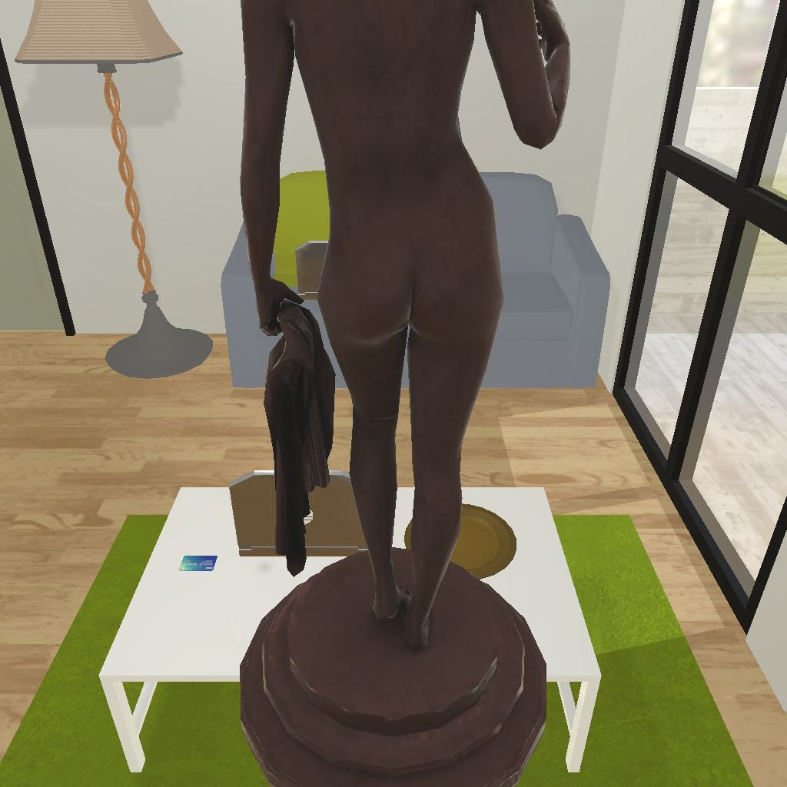

---------------------------------------------------------task: 4---------------------------------------------------------
--------------------------------------------------------------------------------------------------------------------------------------------------------------------
--------------------------------------------------------------------------------------------------------------------------------------------------------------------
Step:--------------------------------------------------------------------------5-------------------------------------------------------------------------------
----------------------------------------
VLM Prompt:
Image1:
Image2:
**Instruction**
1. Analyze the provided images to identify all visible household objects and compare the difference between images (e.h. whether the object is opened or not and taken on hand or not), focusing on those relevant to the task description "look at statue under the floorlamp."
2. Use the analysis of images and the task hint "The agent must find an object of the desired type, locate and turn on a light source with the desired object in-hand." to answer the question: what is the most reasonable action in the choices for the task description "look at statue under the floorlamp"?
3. Decide and write the answer using the template: The answer is: (i): , where i is the real number. If there is no desired object in images, search every place based on **Initial Observation** to find the object. And if no one is exactly correct, choose a similar answer.
**Initial Observation**
You are in the middle of a room. Looking quickly around you, you can see armchair (1), coffeetable (1-2), sidetable (1), garbagecan (1), drawer (1), sofa (1), diningtable (1)
**Answer Choices**
(1): go to armchair 1
(2): go to coffeetable 1
(3): go to sidetable 1
(4): go to garbagecan 1
(5): go to drawer 1
(6): go to sofa 1
(7): go to diningtable 1
(8): put statue 1 in/on coffeetable 2
(9): examine statue 1
(10): examine coffeetable 2
**Answer**
Let's think step by step by following the instructions.
----------------------------------------
----------------------------------------
Original Response:
First, we analyze the provided images. Visible household objects include a floor lamp, a sofa, a coffee table, a statue, and what appears to be a remote or phone on the coffee table. The statue is under the floor lamp, which is relevant to the task description "look at statue under the floorlamp." There is no visible difference in the state of the objects between the two images provided.
Next, we use the analysis and the task hint to determine the most reasonable action. The task hint suggests that the agent must find an object of the desired type (statue), locate and turn on a light source (floor lamp) with the desired object in hand. However, the statue is large and already under the floor lamp, so it is not necessary to pick it up. The focus should be on turning on the floor lamp to illuminate the statue.
Based on the **Initial Observation**, there is no action available to turn on the floor lamp. However, the agent is already near the statue and the floor lamp, so the most reasonable action from the given choices that relates to the task description would be to examine the statue, as it is the desired object under the floor lamp.
The answer is: (9): examine statue 1.
----------------------------------------
----------------------------------------
>>> Refine Original VLM Response and Get Pure Action: examine statue 1
----------------------------------------
-----------------------------------------------------------------
Running time: 11.749184131622314 seconds
Total Money: 1.3473800000000005
-----------------------------------------------------------------
-----------------------------------------------------------------
Text Observation:This is a normal statue 1
-----------------------------------------------------------------
UNSUCCEED